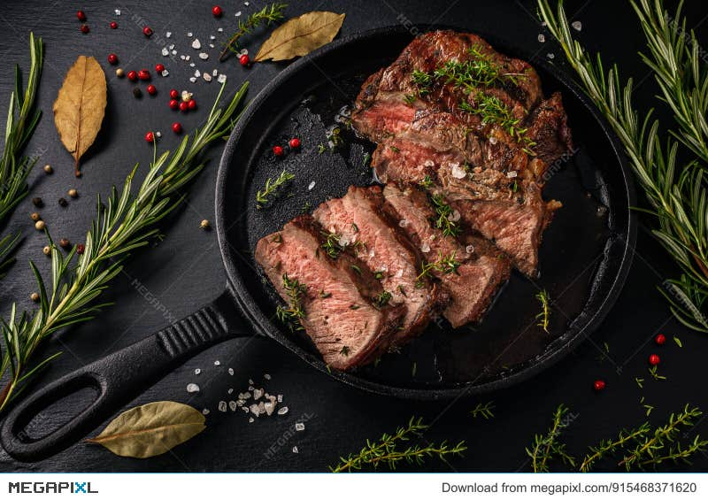

This Pan-Seared Steak has a garlic butter that makes it taste like a steakhouse quality meal. You'll be impressed at how easy it is to make the perfect steak that's seared on the outside, and perfectly tender inside.